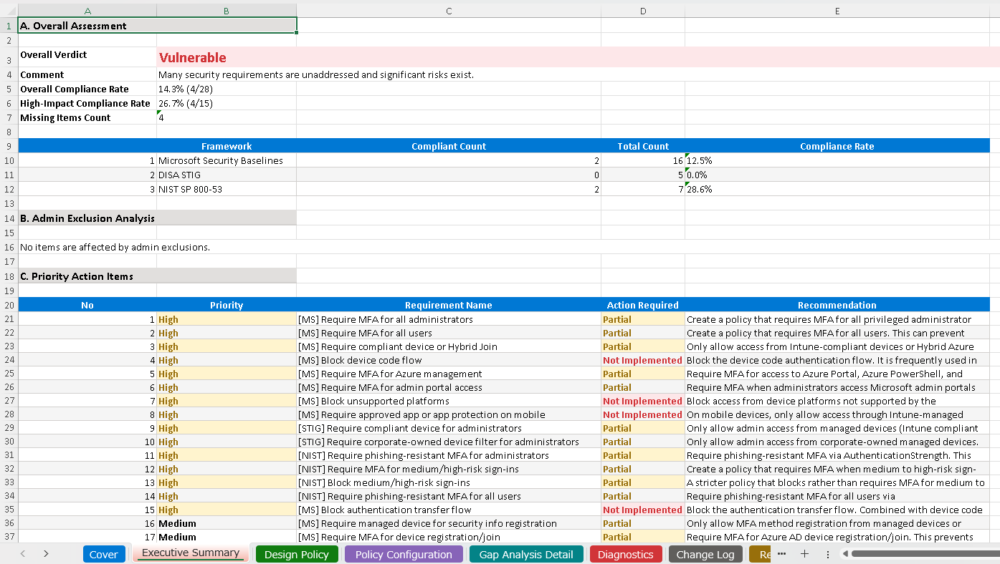

Microsoft Entra ID の条件付きアクセスポリシーをローカルで分析する Windows 向けのセキュリティツールです。本体は無料で 15 日間試用でき、その後は Standard または Pro のアドオンで使い続けられます。Pro ではシミュレーションと、自動診断を含む Excel/PDF の出力に対応します。
最終更新: 2026-11-18
NIST SP 800-53 DISA STIG Microsoft BaselinesCA Policy Analyzer は、Microsoft Entra ID の条件付きアクセス (CA) ポリシーをローカル環境で分析するセキュリティツールです。アプリの形式のポリシー JSON を読み込むと、NIST SP 800-53・DISA STIG・Microsoft Security Baselines の公開情報を参考にしたギャップ分析と改善提案を確認できます。判定は目安であり、各基準の公式の認証や保証ではありません（利用規約第 4 条）。Microsoft Entra 管理センターや Microsoft Graph が出力した JSON は、そのままでは読み込めません。形式はサンプルファイルで確認できます。
ギャップ分析の結果に表示される「管理者除外分析」が、管理者グループの除外が見つかった推奨項目の件数と、そのうち管理者専用ポリシーで補えている件数・補えていない件数を示します。件数はポリシーの件数ではなく、ギャップ分析の推奨項目の件数です。全ユーザー向けポリシーの多くから除外されているグループの項目も含みます。専用ポリシーで対策した場合の総合判定と準拠率の変化（例: 準拠率 65% → 82%）と、項目ごとの現在と改善後のステータスも確認できます。管理者グループ名は、あらかじめ分析設定で登録します。
自動診断の「ロックアウトリスク（Critical）」が検出するのは、全ユーザー・全アプリをブロックし、除外のユーザーも除外のグループも 1 件も無いポリシーだけです。これ以外の原因によるロックアウトは検出しません。結果は画面には出ず、Pro の Excel 設計書の「診断結果」シートと PDF レポートに出力されます。画面では、Pro のシミュレーションに緊急アクセス用アカウント（Break Glass Account。ポリシーの設定ミスなどでサインインできなくなったときに備え、ポリシーから除外しておく緊急用の管理者アカウント）などを入力し、判定が BLOCK にならないかを確かめられます。確かめられるのは、ユーザーまたはグループで除外している場合です。ロールで除外している場合、シミュレーションはロールを評価しないため、結果が実際と異なります。
ギャップ分析の推奨項目「MS-LEGACY-AUTH-BLOCK」と、カバレッジ分析の「レガシー認証のブロック」が、IMAP・POP3・SMTP など MFA に対応しない認証をブロックするポリシーがあるかをどのプランでも示します。レガシー認証をブロックするポリシーが 1 件も無い場合に、許可しているポリシーを 1 件ずつ挙げる自動診断（Warning）の結果は、Pro の Excel・PDF に出力されます。
カバレッジ分析が、全ユーザーへの MFA・管理者ロールの保護・全アプリの保護・レガシー認証のブロック・リスクベースの制御の 5 種類について、ポリシー全体で保護が成り立っていない場合に「設計不備」として示します。また、全ユーザー向けポリシーの多く（全体の 7 割〔小数点以下切り捨て〕以上、かつ 2 件以上）から除外されているグループを「グループ『○○』が全ユーザー対象ポリシー 10 件中 8 件から除外されています」のように示し、除外が重なってできた穴を見つけられます。
ギャップ分析が、Microsoft 16 項目・DISA STIG 5 項目・NIST SP 800-53 7 項目の計 28 項目の推奨構成と現在のポリシーを比較し、項目ごとに準拠・不十分・未構成などを判定します。準拠率と総合判定、推奨修正の手順も確認できます。
シミュレーションで、ユーザー・グループ・アプリ・プラットフォーム（OS）・クライアントアプリ・場所を仮定し、BLOCK か ALLOW か、必要なコントロールを確認できます。評価・適用・不適用・無効のポリシーの件数も表示されるため、実環境に適用する前に、意図どおりに動くかを検証できます。
シミュレーションの結果には、適用されたポリシーと適用されなかったポリシーの一覧が出ます。どの条件が一致したか、一致しなかったかの理由も確認でき、原因の特定とポリシーの見直しに使えます。
自動診断が、対象ユーザーと対象アプリの指定が重なる 2 つのポリシーで、一方がブロック、他方が許可のものを「競合（Warning）」、効果と要求するコントロールが同じものを「重複（Info）」として検出します。結果は Pro の Excel 設計書の「診断結果」シートと PDF レポートに出力されます。
JSON ファイルを読み込むときに、変更者と変更理由の入力が必須です。入力内容は、日時・元のファイル名・追加／削除／変更されたポリシーと項目ごとの新旧の値とともに変更履歴に残ります。画面での登録・編集・削除は「手動編集」などの操作名で記録されます。アプリ内の操作の記録であり、テナントの監査ログではありません。
ギャップ分析で適合していない項目の詳細に、レポート専用モードで安全に試すための導入手順（レポート専用デプロイガイド）と、変更の影響を確認するための KQL（Kusto Query Language。Log Analytics でサインインログを検索するためのクエリ言語）クエリの例が示されます。
Excel 設計書は「表紙・総評・設計方針・ポリシー設定状況・ギャップ分析詳細・診断結果・変更管理記録・参照フレームワーク」の 8 シートで出力されます。総評には「優先対応事項」と「改善後の見通し」が入ります。PDF レポートも出力でき、どちらも出力時に組織名と作成者の入力が必要です。
無効のポリシーは診断の対象外です。対応 OS は Windows 10（バージョン 2004 以降）と Windows 11 です。
本体は無料で、初回起動から 15 日間は試用できます。試用期間が終わると、Standard または Pro のアドオン（アプリ内購入）を購入するまで、すべての画面がロックされます。Pro だけを購入した場合も期間の制限は解除されます。価格は Microsoft Store でご確認ください。
ポリシー管理（読み込み・編集・JSON エクスポート）、ギャップ分析（28 項目）、カバレッジ分析（設計不備・除外グループ）、管理者除外分析、変更履歴、ネームドロケーション。Standard では、これらを期限なく使えます。
Standard の全機能に加えて、シミュレーション（単一シナリオ・比較）と、Excel 設計書（8 シート）・PDF レポートの出力。自動診断（ロックアウト・レガシー認証・管理者保護・競合・重複）の結果は、この Excel・PDF に出力されます。
本ソフトウェアで作成したレポート・設計書・診断結果を、顧客などの第三者に販売・譲渡する場合や、コンサルティング業務の一部として提供する場合は、別途 Pro ライセンスが必要です。詳しくは利用規約第 10 条（商用利用の制限）を確認してください。
Microsoft Store から入手できます。初回起動から 15 日間は無料で試用できます。
プライバシー: すべてのデータはローカルで処理されます。外部サーバーへのデータ送信は一切行いません（Microsoft Store ライセンス API を除く）。
CA Policy Analyzer is a Windows security tool that analyzes Microsoft Entra ID Conditional Access policies locally. The app is free with a 15-day trial; after that, a Standard or Pro add-on keeps it running. Pro adds simulation and Excel/PDF reports that include the automatic diagnostics.
Last updated: 2026-11-18
NIST SP 800-53 DISA STIG Microsoft BaselinesCA Policy Analyzer is a security tool that analyzes Microsoft Entra ID Conditional Access (CA) policies in a local environment. Load policy JSON in the app's format to review gap analysis and improvement recommendations that draw on public information from NIST SP 800-53, DISA STIG and Microsoft Security Baselines. The assessments are a guide, not an official certification or guarantee by any of these frameworks (Terms of Use, Article 4). JSON exported from the Microsoft Entra admin center or Microsoft Graph cannot be loaded as it is. You can check the format in the sample file.
The Admin Exclusion Analysis shown with the Gap Analysis results tells you how many recommendation items show an administrator group exclusion, and how many of them are or are not covered by a dedicated admin policy. The count is of Gap Analysis recommendation items, not of policies, and it includes the items for groups excluded from most of your all-user policies. It also shows how the overall verdict and compliance rate would change if you add dedicated admin policies (for example, 65% to 82%), plus the current and improved status of each affected item. Register your admin group names in Analysis Settings first.
The "Lockout Risk (Critical)" diagnostic flags only policies that block all users and all apps with no excluded users and no excluded groups at all. It does not detect lockouts that have other causes. It is not shown on screen; it appears in the "Diagnostics" sheet of the Pro Excel design document and in the PDF report. On screen, you can enter an emergency access account (a "Break Glass Account": an emergency administrator account that you keep excluded from policies, so you can still sign in if a policy misconfiguration locks everyone out) in a Pro simulation and check that the decision is not BLOCK. This works when the account is excluded by user or by group. If it is excluded by role, the result differs from the actual behavior, because the simulation does not evaluate roles.
On every plan, the Gap Analysis item "MS-LEGACY-AUTH-BLOCK" and the Coverage Analysis item "Legacy authentication block" show whether any policy blocks protocols such as IMAP, POP3 and SMTP that cannot use MFA. The automatic diagnostic (Warning) is included in the Pro Excel and PDF reports: if no policy blocks legacy authentication, each policy that allows it is listed.
Coverage Analysis marks a "Design Flaw" when your policies as a whole fail to provide one of five protections: MFA for all users, admin role protection, protection of all apps, legacy authentication blocking, and risk-based control. It also lists groups excluded from most of your all-user policies (at least 70% of them, rounded down, and at least two), such as "Group 'Contractors' is excluded from 8 out of 10 all-user policies," so you can find holes created by overlapping exclusions.
Gap Analysis compares your policies with 28 recommended configuration items (16 from Microsoft, 5 from DISA STIG and 7 from NIST SP 800-53) and rates each item as compliant, Insufficient, Not Configured, and so on. You also get a compliance rate, an overall verdict and recommended remediation steps.
In the simulation, you enter a hypothetical user, group, app, platform (OS), client app and location, and see whether access would be BLOCKED or ALLOWED and which controls are required. The result also counts the policies evaluated, applied, not applied and disabled, so you can confirm policies behave as intended before applying them to production.
Simulation results list the applied and not-applied policies, along with which conditions matched and why others did not. That lets you pinpoint the cause and fix the policy.
For each pair of policies whose included users and apps overlap, the automatic diagnostics report a "Conflict (Warning)" when one blocks and the other grants access, and a "Duplicate (Info)" when both have the same effect and the same required controls. The results appear in the "Diagnostics" sheet of the Pro Excel design document and in the PDF report.
When you load a JSON file, you must enter who is making the change and why. That is stored in the change history with the date and time, the source file name, the added, removed and modified policies, and the old and new value of each setting. Additions, edits and deletions made on screen are recorded with an operation name such as "Manual Edit." This is a record of operations in the app, not your tenant's audit log.
For each Gap Analysis item that is not compliant, the detail view includes a report-only deployment guide for testing safely, plus sample KQL (Kusto Query Language, a query language for searching sign-in logs in Log Analytics) queries for checking the impact of the change.
The Excel design document has eight sheets: Cover, Executive Summary, Design Policy, Policy Configuration, Gap Analysis Detail, Diagnostics, Change Log and Reference Frameworks. The Executive Summary includes priority actions and the outlook after improvement. You can also export a PDF report. Both require an organization name and an author when you export.

displayName, grantControls, and so on) before you load it. You can check the format in the sample file sample-policies-for-review.json.Disabled policies are skipped by the diagnostics. Supported on Windows 10 (version 2004 or later) and Windows 11.
The app itself is free, and you can try it for 15 days from the first launch. When the trial ends, every screen is locked until you buy the Standard or Pro add-on (in-app purchase). Buying Pro alone also removes the time limit. Check the Microsoft Store for prices.
Policy management (load, edit and JSON export), Gap Analysis (28 items), Coverage Analysis (design flaws and excluded groups), Admin Exclusion Analysis, change history and named locations. Standard lets you keep using all of these with no time limit.
Everything in Standard, plus simulation (single scenario and comparison) and export of the Excel design document (8 sheets) and PDF report. The automatic diagnostics (lockout, legacy authentication, administrator protection, conflicts and duplicates) are included in these Excel and PDF files.
If you sell or transfer reports, design documents or diagnostic results created with this software to third parties such as customers, or provide them as part of consulting services, you need a separate Pro license. See Article 10 (Commercial Use Restrictions) of the Terms of Use for details.
Available from the Microsoft Store, with a free 15-day trial from the first launch.
Privacy: All data is processed locally. No data is ever sent to external servers (except Microsoft Store license API).